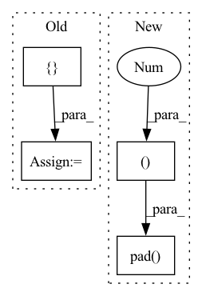

Pattern ID :28677
Before Change
//zeros = self.zeros.repeat(x.shape[0], 1, 1, 1)
zeros = torch.zeros(x.shape[0], 1, *self.bf.shape[1:], device=self.weight.device)
x = torch.cat([ x, zerosAfter Change
//zeros = self.zeros.repeat(x.shape[0], 1, 1, 1)
//zeros = torch.zeros(x.shape[0], 1, *self.bf.shape[1:], device=self.weight.device)
//x = torch.cat([x, zeros], dim=1)
x = torch.nn.functional.pad( x, (0 ,0,0,0,0,1 ))
return x[:, self.idxs] + self.bf
def __repr__(self):
return f"ConvExpand({self.in_channels}, {self.out_channels}, exp={len(self.idxs)})"In pattern: SUPERPATTERN
Frequency: 3
Non-data size: 4
Instances Fragment ID: 84568610
Project Name: eidoslab/simplify
Commit Name: 68ab4bdd6c0acb399359f4ad18ca78029ccb8583
Time: 2021-07-01
Author: carlo.alberto.barbano@outlook.com
File Name: simplify/layers.py
M Class Name: ConvExpand
N Class Name: ConvExpand
M Method Name: forward(2)
N Method Name: forward(2)
M Parent Class: nn.Conv2d
N Parent Class: nn.Conv2d
M File Name: simplify/layers.py
N File Name: simplify/layers.py
M Start Line: 29
M End Line: 33
N Start Line: 29
N End Line: 34
Before Change
zeros = torch.zeros(x.shape[0], 1, *self.bf.shape[1:], device=self.weight.device)
//zeros = self.zeros.repeat(x.shape[0], 1, 1, 1)
x = torch.cat([ x, zerosAfter Change
//zeros = torch.zeros(x.shape[0], 1, *self.bf.shape[1:], device=self.weight.device)
//zeros = self.zeros.repeat(x.shape[0], 1, 1, 1)
//x = torch.cat([x, zeros], dim=1)
x = torch.nn.functional.pad( x, (0,0,0,0,0,1 ))
x = x[:, self.idxs]
return x + self.bf[:, None, None].expand_as(x[0])
Fragment ID: 84568602
Project Name: eidoslab/simplify
Commit Name: f7223932c8dd7d39af815bbe7f2ce6c458aaf6f4
Time: 2021-07-01
Author: carlo.alberto.barbano@outlook.com
File Name: simplify/layers.py
M Class Name: BatchNormExpand
N Class Name: BatchNormExpand
M Method Name: forward(2)
N Method Name: forward(2)
M Parent Class: nn.BatchNorm2d
N Parent Class: nn.BatchNorm2d
M File Name: simplify/layers.py
N File Name: simplify/layers.py
M Start Line: 64
M End Line: 68
N Start Line: 64
N End Line: 69
Before Change
detected_objects = detected_objects/iters
violating_objects = violating_objects/iters
report = {
"hours": hours,
"detected_objects": np.around(detected_objects).tolist(),
"violating_objects": np.around(violating_objects).tolist(),
"detected_faces": np.around(detected_faces).tolist(),
"faces_with_mask": np.around(faces_with_mask).tolist(),
}
return report
def daily_report(self, camera_id, from_date, to_date):
Returns a report of daily detection and violations for a specific camera in a range of datesAfter Change
report = {
"hours": hours,
"detected_objects": np.pad(
detected_objects, (0 , 24 - detected_objects.size ), mode="constant") .tolist(),
"violating_objects": np.pad(
violating_objects, (0, 24 - violating_objects.size), mode="constant").tolist(),
"detected_faces": np.pad( Fragment ID: 84568612
Project Name: neuralet/smart-social-distancing
Commit Name: 1b0c1e8164106e6a8eec48c5d3062b40a11e38ca
Time: 2020-12-04
Author: pablo.grill@xmartlabs.com
File Name: libs/utils/reports.py
M Class Name: ReportsService
N Class Name: ReportsService
M Method Name: hourly_report(3)
N Method Name: hourly_report(4)
M Parent Class:
N Parent Class:
M File Name: libs/utils/reports.py
N File Name: libs/utils/reports.py
M Start Line: 26
M End Line: 72
N Start Line: 43
N End Line: 69